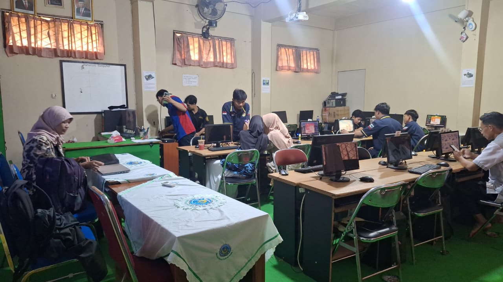

"Kesuksesan tidak datang kepada mereka yang paling pintar, tetapi kepada mereka yang tidak berhenti belajar."
Wisuda Anak Asuh Panti Asuhan Melati Kudus.
Lihat IG LKSA
Website Profil DiriKU.
Lihat Profil pake HTML
Wisuda Masa Akhir Abu-abu.
Lihat IG MA Ma'ahid Kudus